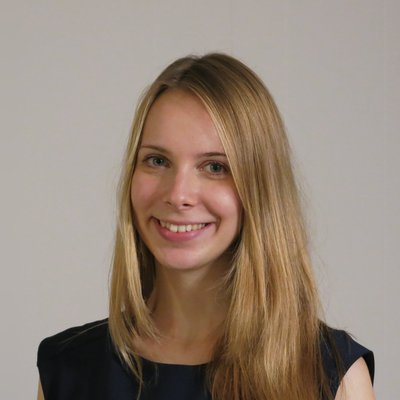

Learned models that simulate, plan, and act in the real world — bringing together generative modeling, reinforcement learning, robotics, computer vision, autonomous driving, and simulation.
World models predict how an environment evolves, optionally conditioned on an agent's actions, and can be rolled out to imagine future observations and outcomes. For physical-AI systems — robots, autonomous vehicles, and embodied agents — this capability is central: an agent that can simulate its world can plan, learn from imagined experience, and handle situations missing from its training data.
Progress now spans latent-dynamics models for control, interactive and generative video simulators, foundation world-model platforms, and closed-loop autonomous-driving simulation. Model-based RL, generative simulation, and video prediction are all converging on controllable models of the world — but in separate communities. This one-day workshop brings them together to ask what world models must deliver to serve as a deployable computational substrate for physical AI.
Talks, papers, and discussion spanning the pipeline from data and representations, through evaluation, to planning and control.
Latent vs. pixel/video models, JEPA embeddings, identifiable latents, omnimodal models, 3D and contact dynamics.
Model-based RL, planning and control, learning in imagination, forward and inverse dynamics, world-action models.
World models as data generators and interactive closed-loop simulators for robotics and driving; sim-to-real and real-to-sim.
Measuring whether world models are physically correct, causally faithful, and useful for downstream control; benchmarking robustness and generalization.
Data, compute, and generalization of large pretrained world models across embodiments and domains.
Reliability, safety, and the broader impact of world models that drive real physical systems.
The program — talks, a panel, and a closing debate — is organized around concrete, contested questions.
Can we agree on benchmarks that measure physical consistency and downstream control utility — not just pixel fidelity? For closed-loop simulators, should evaluation preserve policy rankings and real-world failure modes?
Should world models predict in observation space or in abstract latent space? When are inspectable rollouts necessary, and when are identifiable, low-dimensional latents enough for planning and control?
How do we keep rollouts action-controllable and physically consistent over long horizons — preserving object identity, contact, causality, and state under repeated interventions?
When can a generative world model replace or augment a physics or reconstruction-based simulator for training and evaluating deployable policies?
Do world models for physical AI follow favorable scaling laws, and what multimodal data unlocks generalization to new embodiments, action spaces, and domains?
We invite submissions on learned models of physical-world dynamics for Physical AI. Papers may be up to 8 pages, excluding references, using the NeurIPS 2026 template. Accepted work is non-archival and managed on OpenReview.
Excluding references, using the NeurIPS 2026 paper template.
Authors may later submit to an archival venue. At least one author per submission must agree to review.
Author notification by September 29, 2026 (all deadlines AoE).
Submissions span all workshop topics — representations, world models for action, generative simulation, evaluation, scaling, and safety. Full instructions, policies, and the OpenReview link are on the call-for-papers page.
All deadlines are anywhere-on-Earth (AoE). See the call for papers for full submission details.
Papers may be up to 8 pages, excluding references, using the NeurIPS 2026 template. Accepted work is non-archival, and submissions are managed on OpenReview. Full instructions are in the call for papers.
A single-track, one-day program balancing invited talks, contributed content, and structured discussion.
Generative and video world models.
Task, results, and winners.
"Pixels vs. latents" — generative simulators vs. physics engines.
World models for action and robotics.
"How should we evaluate world models for physical AI?"
Tentative schedule — talk titles and speaker assignments will be published before the workshop.
A challenge on causal reasoning and retrieval for autonomous driving, run alongside the workshop. Task, data, baselines, and all challenge-specific announcements are posted on the challenge page. Winners will be announced during the workshop.
Visit the challenge page
Jenny Schmalfuss